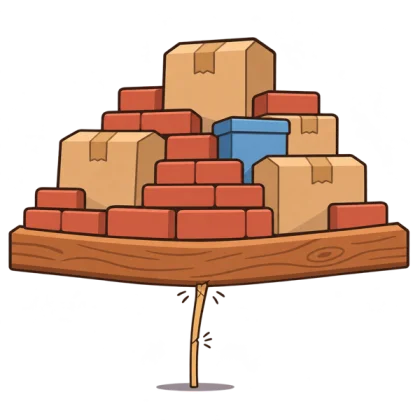

tidepool — claude

Drafting messages with your agent
What if there was a better UI for polishing message drafts?
Draftmux
Many more use cases
Draftmux
Now on Mac and Linux
Drafts with Claude Code or pi, built on GPUI